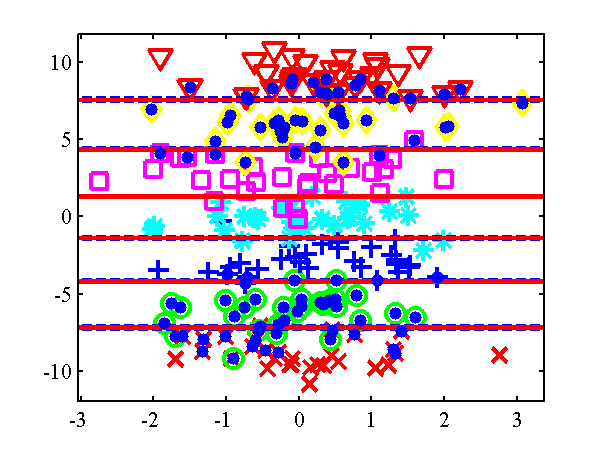
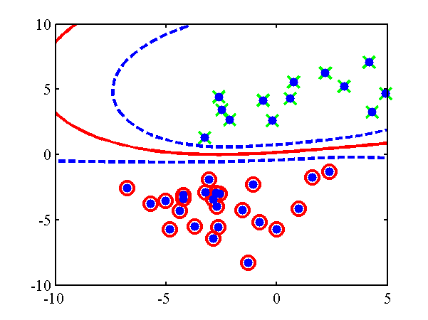
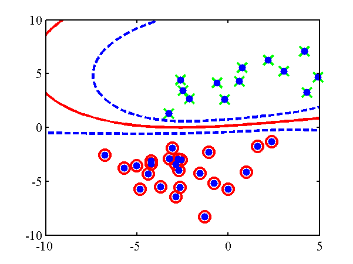
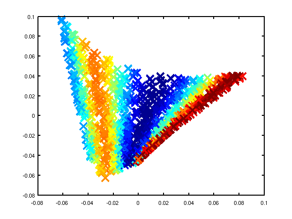
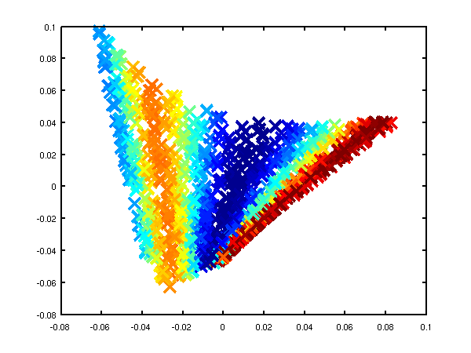
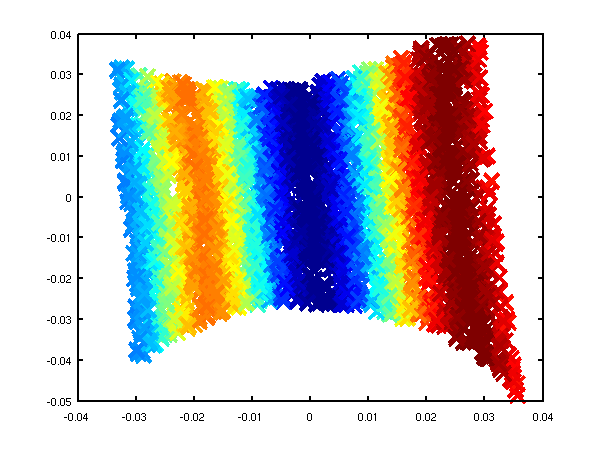
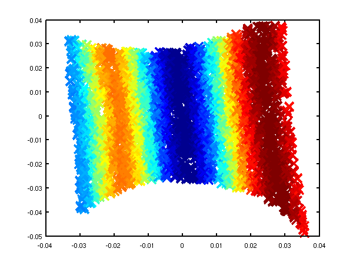
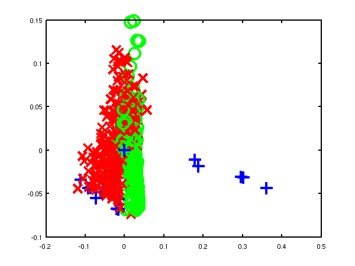
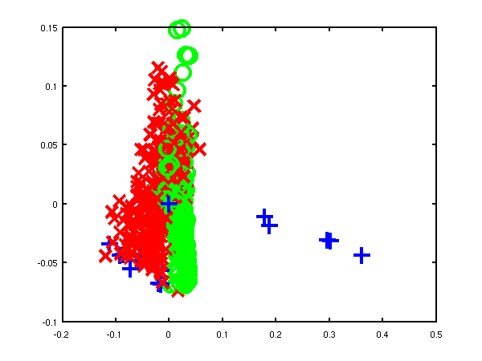

GPmat
Matlab implementations of Gaussian processes and other machine learning tools.
GPmat
GP
Version 0.136
Changes to gpReadFromFID for compatibility with C++ code.
Version 0.135
Modifications by Carl Henrik Ek for compatability with the SGPLVM toolbox.
Version 0.134
Updates to allow deconstruction of model files when writing to disk (gpWriteResult, gpLoadResult, gpDeconstruct, gpReconstruct).
Version 0.133
Updates for running a GPLVM/GP using the data's inner product matrix for Interspeech synthesis demos.
Version 0.132
Examples transfered from oxford toolbox, variational approximation from Titsias added as an option with 'dtcvar'.
Version 0.131
Changes to allow compatibility with SGPLVM and NCCA toolboxes.
Version 0.13
Changes to allow more flexibility in optimisation of beta.
Version 0.12
Various minor changes for enabling back constraints in hierarchical GP-LVM models.
Version 0.11
Changes include the use of the optimiDefaultConstraint('positive') to obtain the function to constrain beta to be positive (which now returns 'exp' rather than 'negLogLogit' which was previously the default). Similarly default optimiser is now given by a command in optimiDefaultOptimiser.
Version 0.1
The first version which is spun out of the FGPLVM toolbox. The corresponding FGPLVM toolbox is 0.15.
Release 0.1 splits away the Gaussian process section of the FGPLVM toolbox into this separate toolbox.
Other GP related software
The GP-LVM C++ software is available from here.
The IVM C++ software is available from here.
The MATLAB IVM toolbox is available here here.
The original MATLAB GP-LVM toolbox is available here here.
Examples
Functions from Gaussians
This example shows how points which look like they come from a function to be sampled from a Gaussian distribution. The sample is 25 dimensional and is from a Gaussian with a particular covariance.
>> demGpSample

Left A single, 25 dimensional, sample from a Gaussian distribution. Right the covariance matrix of the Gaussian distribution..
Joint Distribution over two Variables
Gaussian processes are about conditioning a Gaussian distribution on the training data to make the test predictions. To illustrate this process, we can look at the joint distribution over two variables.
>> demGpCov2D([1 2])Gives the joint distribution for f1 and f2. The plots show the joint distributions as well as the conditional for f2 given f1.


Left Blue line is contour of joint distribution over the variables f1 and f2. Green line indicates an observation of f1. Red line is conditional distribution of f2 given f1. Right Similar for f1 and f5.
Different Samples from Gaussian Processes
A script is provided which samples from a Gaussian process with the provided covariance function.
>> gpSample('rbf', 10, [1 1], [-3 3], 1e5)will give 10 samples from an RBF covariance function with a parameter vector given by 1 1 across the range -3 to 3 on the x-axis. The random seed will be set to 1e5.
>> gpSample('rbf', 10, [16 1], [-3 3], 1e5)is similar, but the inverse width is now set to 16 (length scale 0.25).


Left samples from an RBF style covariance function with length scale 1. Right samples from an RBF style covariance function with length scale 0.25.
Other covariance functions can be sampled, an interesting one is the MLP covariance which is non stationary and can produce point symmetric functions,
>> gpSample('mlp', 10, [100 100 1], [-1 1], 1e5)gives 10 samples from the MLP covariance function where the "bias variance" is 100 (basis functions are centered around the origin with standard deviation of 10) and the "weight variance" is 100.
>> gpSample('mlp', 10, [100 1e-16 1], [-1 1], 1e5)gives 10 samples from the MLP covariance function where the "bias variance" is approximately zero (basis functions are placed on the origin) and the "weight variance" is 100.


Left samples from an MLP style covariance function with bias and weight variances set to 100. Right samples from an MLP style covariance function with weight variance 100 and bias variance approximately zero.
Posterior Samples
Gaussian processes are non-parametric models. They are specified by their covariance function and a mean function. When combined with data observations a posterior Gaussian process is induced. The demos below show samples from that posterior.
>> gpPosteriorSample('rbf', 5, [1 1], [-3 3], 1e5)and
>> gpPosteriorSample('rbf', 5, [16 1], [-3 3], 1e5)

Left samples from the posterior induced by an RBF style covariance function with length scale 1 and 5 "training" data points taken from a sine wave. Right Similar but for a length scale of 0.25.
Simple Interpolation Demo
This simple demonstration plots, consecutively, an increasing number of data points, followed by an interpolated fit through the data points using a Gaussian process. This is a noiseless system, and the data is sampled from a GP with a known covariance function. The curve is then recovered with minimal uncertainty after only nine data points are included. The code is run with
>> demInterpolation

Gaussian process prediction left after two points with a new
data point sampled right after the new data point is included
in the prediction.


Gaussian process prediction left after five points with a four
new data point sampled right after all nine data points are
included.
Simple Regression Demo
The regression demo very much follows the format of the interpolation demo. Here the difference is that the data is sampled with noise. Fitting a model with noise means that the regression will not necessarily pass right through each data point.
The code is run with
>> demRegression

Gaussian process prediction left after two points with a new
data point sampled right after the new data point is included
in the prediction.


Gaussian process prediction left after five points with a four
new data point sampled right after all nine data points are
included.
Optimizing Hyper Parameters
One of the advantages of Gaussian processes over pure kernel interpretations of regression is the ability to select the hyper parameters of the kernel automatically. The demo
>> demOptimiseGpshows a series of plots of a Gaussian process with different length scales fitted to six data points. For each plot there is a corresponding plot of the log likelihood. The log likelihood peaks for a length scale equal to 1. This was the length scale used to generate the data.


From top left to bottom right, Gaussian process regression applied to the data with an increasing length scale. The length scales used were 0.05, 0.1, 0.25, 0.5, 1, 2, 4, 8 and 16.

Log-log plot of the log likelihood of the data against the length scales. The log likelihood is shown as a solid line. The log likelihood is made up of a data fit term (the quadratic form) shown by a dashed line and a complexity term (the log determinant) shown by a dotted line. The data fit is larger for short length scales, the complexity is larger for long length scales. The combination leads to a maximum around the true length scale value of 1.
Regression over Motion Capture Markers
As a simple example of regression for real data we consider a motion capture data set. The data is from Ohio State University. In the example script we perform Gaussian process regression with time as the input and the x,y,z position of the marker attached to the left ankle. To demonstrate the behavior of the model when the marker is lost, we remove data from This code can be run with
>> demStickGp1 The code will optimize hyper parameters and show plots of the posterior process through the training data and the missing test points.
The result of the script is given in the plot below.


Gaussian process regression through the x (left), y (middle) and z (right) position of the left ankle. Training data is shown as black spots, test points removed to simulate a lost marker are shown as circles, posterior mean prediction is shown as a black line and two standard deviations are given as grey shading.
Notice how the error bars are tight except in the region where the training data is missing and in the region where the training data disappears.
Sparse Pseudo-input Gaussian Processes
The sparse approximation used in this toolbox is based on the Sparse Pseudo-input Gaussian Process model described by Snelson and Ghahramani. Also provided are the extensions suggested by Quiñonero-Candela and Rasmussen. They provide a unifying terminology for describing these approximations which we shall use in what follows.
There are three demos provided for Gaussian process regression in 1-D. They each use a different form of likelihood approximation. The first demonstration uses the "projected latent variable" approach first described by Csato and Opper and later used by Seeger et al.. In the terminology of Quiñonero-Candela and Rasmussen (QR-terminology) this is known as the "deterministic training conditional" (DTC) approximation.
To use this approximation the following script can be run.
>> demSpgp1dGp1 The result of the script is given in the plot below.

Gaussian process using the DTC approximation with nine inducing variables. Data is shown as black spots, posterior mean prediction is shown as a black line and two standard deviations are given as grey shading.
The improved approximation suggested by Snelson and Ghahramani, in QR-terminology this is known as the fully independent training conditional (FITC). To try this approximation run the following script
>> demSpgp1dGp2 The result of the script is given on the left of the plot below.


Left: Gaussian process using the FITC approximation with nine inducing variables. Data is shown as black spots, posterior mean prediction is shown as a black line and two standard deviations are given as grey shading. Right: Similar but for the PITC approximation, again with nine inducing variables.
At the Sheffield Gaussian Process Round Table Lehel Csato pointed out that the Bayesian Committee Machine of Schwaighofer and Tresp can also be viewed within the same framework. This idea is formalised in Quiñonero-Candela and Rasmussen's review. This approximation is known as the "partially independent training conditional" (PITC) in QR-terminology. To try this approximation run the following script
>> demSpgp1dGp3The result of the script is given on the right of the plot above.
Finally we can compare these results to the result from the full Gaussian process on the data with the correct hyper-parameters. To do this the following script can be run.
>> demSpgp1dGp4The result of the script is given in the plot below.

Full Gaussian process on the toy data with the correct hyper-parameters. Data is shown as black spots, posterior mean prediction is shown as a black line and two standard deviations are given as grey shaded area.
GP-LVM
Changes for compatibility with new SGPLVM toolbox by Carl Henrik Ek.
Version 0.162
Added new files fgplvmWriteResults fgplvmLoadResults for saving smaller model files.
Version 0.161
Updates for running a GPLVM when the inner produce matrix is used (i.e. dimensionality much greater than data points). Minor changes to fix reading of GPLVM files from latest C++ code.
Version 0.16
Incorporate varational approximation from Michalis in the code.
Version 0.153
Changes to allow compatibility with SGPLVM and NCCA toolboxes.
Version 0.152
Bug fix from fgplvmReadFromFID where the values of model.m weren't being computed correctly.
Version 0.151
In this version results for the CMU Mocap data set from Taylor et al. of subject 35 running and walking are included, as well as some minor changes to allow hierarchical GP-LVMs to be used.
Version 0.15
This version splits the Gaussian process portion into a new GP toolbox, the corresponding version is 0.1. Fixed bug in gpDynamicsExpandParam, gpDynamicsExractParam and gpDynamicsLogLikeGradient where 'fixInducing' option was not being dealt with.
Fixed bug in fgplvmCreate.m where the back constraints were set up, but the latent positions were not being set according to the back constraints in the returned model.
Version 0.141
Changed GP-LVM default optimiser to scg rather than conjgrad. Added fgplvmOptimiseSequence and dependent files. This is for optimising a test sequence in the latent space, for the case where there are dynamics on the model.
Version 0.14
Carl Ek implemented multiple sequences in the gpDynamics model used for dynamics in the GPLVM, this was refined and integrated by Neil.
Fixed two bugs in gpPosteriorGradMeanVar which appeared if fitc was used or the scales on the outputs were non-zero. This in turn affected fgplvmOptimisePoint.
Default under back constraints switched to not optimise towards a PCA initialisation.
Fixed bug in fgplvmReadFromFID where the old form of fgplvmCreate was being called.
Version 0.132
Release 0.132 includes two speed improvements on the pitc approximation. Thanks to Ed Snelson for pointing out that it was unusually slow! New versions of the NDLUTIL and KERN toolbox are also required.
Release 0.131 adds the ability to handle missing data and a new reversible dynamics model.
Release 0.13 is a (hopefully) fairly stable base release for which several results in forthcoming papers will be created. Additional features are better decompartmentalisation of dynamics models, regularisation of inducing variable's inputs and introduction of fgplvmOptions and gpOptions for setting default options for the models.
Release 0.11 is the first release that contains the fully independent training conditional approximation (Snelson and Ghahramani, Quinonero Candela and Rasmussen).
Release 0.1 is a pre-release to make some of the model functionality available. The some of the different approximations (such as fully independent training conditional and partially independent training conditional) are not yet implemented and the dynamics currently has no sparse approximations associated.
This toolbox also implements back constraints (joint work with Joaquin Quinonero Candela). The mappings that can be used as back constraints are those described in the MLTOOLS toolbox.
Alternative GP-LVM implementations from this site:
The GP-LVM C++ software is available from here.
The original MATLAB version of the toolbox is available here here.
Examples
GP-LVM
The three approximations outlined above can be used to speed up learning in the GP-LVM. They have the advantage over the IVM approach taken in the original GP-LVM toolbox that the algorithm is fully convergent and the final mapping from latent space to data space takes into account all of the data (not just the points in the active set).
As well as the new sparse approximation the new toolbox allows the GP-LVM to be run with dynamics as suggested by Wang et al..
Finally, the new toolbox allows the incorporation of `back constraints' in learning. Back constraints force the latent points to be a smooth function of the data points. This means that points that are close in data space are constrained to be close in latent space. For the standard GP-LVM points close in latent space are constrained to be close in data space, but the converse is not true.
Various combinations of back constraints and different approximations are used in the exmaples below.
Oil Data
The 'oil data' is commonly used as a bench mark for visualisation algorithms. For more details on the data see this page.
The C++ implementation of the GP-LVM has details on training the full GP-LVM with this data set. Here we will consider the three different approximations outlined above.
FITC Approximation
In all the examples we give there will be 100 points in the active set. We first considered the FITC approximation. The script demOilFgplvm1.m runs the FITC approximation giving the result on the left of the figure shown below.


Left: GP-LVM on the oil data using the FITC approximation without back constraints. The phases of flow are shown as green circles, red crosses and blue plusses. One hundred inducing variables are used. Right: Similar but for a back-constrained GP-LVM, the back constraint is provided by a multi-layer perceptron with 15 hidden nodes.
Back constraints can be added to each of these approximations. In the example on the right we used a back constraint given by a multi-layer perceptron with 15 hidden nodes. This example can be recreated with demOilFgplvm2.m.
DTC Approximation
The other approximations can also be used, in the figures below we give results from the DTC approximation. The can be recreated using demOil3.m and demOil4.m.


Left: GP-LVM on the oil data using the DTC approximation without back constraints. The phases of flow are shown as green circles, red crosses and blue plusses. One hundred inducing variables are used. Right: Similar but for a back-constrained GP-LVM, the back constraint is provided by a multi-layer perceptron with 15 hidden nodes.
PITC Approximation
We also show results using the PITC approximation, these results can be recreated using the scripts demOilFgplvm5.m and demOilFgplvm6.m.


Left: GP-LVM on the oil data using the PITC approximation without back constraints. The phases of flow are shown as green circles, red crosses and blue plusses. One hundred inducing variables are used. Right: Similar but for a back-constrained GP-LVM, the back constraint is provided by a multi-layer perceptron with 15 hidden nodes.
Variational DTC Approximation
Finally we also show results using the variational DTC approximation of Titsias, these results can be recreated using the scripts demOilFgplvm7.m and demOilFgplvm8.m.


Left: GP-LVM on the oil data using the variational DTC approximation without back constraints. The phases of flow are shown as green circles, red crosses and blue plusses. One hundred inducing variables are used. Right: Similar but for a back-constrained GP-LVM, the back constraint is provided by a multi-layer perceptron with 15 hidden nodes.
Back Constraints and Dynamics
First we will demonstrate the dynamics functionality of the toolbox. We raw x-y-z values from a motion capture data set, the Figure Run 1 example available from Ohio State University. To run without dynamics use the script:
>> demStickFgplvm1The results are given on the left of the figure below.

GP-LVM on the motion capture data without dynamics in the latent space.
Notice that the sequence (which is a few strides of a man running) is split into several sub-sequences. These sub-sequences are aligned to the strides of the man. By introducing a dynamics prior, we can force the sequence to link up. Samples from the dynamics prior used are shown in the plot below.


 Samples from the dynamics prior which is placed over the latent space. This prior has Left: GP-LVM on the motion capture data without dynamics in the latent space. Right: GP-LVM with dynamics. Samples from the dynamics prior used are given in the figure above.
Samples from the dynamics prior which is placed over the latent space. This prior has Left: GP-LVM on the motion capture data without dynamics in the latent space. Right: GP-LVM with dynamics. Samples from the dynamics prior used are given in the figure above.
This prior is used in the model to obtain the results below,
>> demStickFgplvm2
GP-LVM with dynamics. Samples from the dynamics prior used are given in the figure above.
Note now the circular form of the latent space.
Back constraints can also be used to achieve a similar effect,
>> demStickFgplvm3
GP-LVM with back constraints. A RBF kernel mapping was used to form the back constraints with the inverse width set to 1e-4 (i.e.length scale set to 100).
Loop Closure in Robotics
In on-going work with Dieter Fox and Brian Ferris at the University of Washington we are interested in loop closure for robotic navigation, included as an example is a data set of a robot completing a loop while reading wireless access point signal strengths. To produce a neat track and close the loop it turns out it is necessary to use dynamics and back constraints as seen in the images below. These results can be recreated with demRobotWireless1.m through demRobotWireless4.m.


Use of back constraints and dynamics to obtain loop closure in a robot navigation example. Top Left: GP-LVM without back constraints or dynamics, Top right: GP-LVM with back constraints, no dynamics, Bottom Left: GP-LVM with dynamics, no back constraints, Bottom right: GP-LVM with back constraints and dynamics.
Vocal Joystick and Vowel Data
Another ongoing piece of work with Jeff Bilmes and Jon Malkin involves embedding vowel sounds in a two dimensional space as part of vocal joystick system. Jon has provided a simple data set of 2,700 examples of different vowels. These are embedded in a two dimensional latent space with and without back constraints.


Left: embedding of the vowel data without back constraints, Right: embedding of the vowel data with back constraints. /a/ - red cross, /ae/ - green circle, /ao/ - blue plus, /e/ - cyan asterix, /i/ - magenta square, /ibar/ - yellow diamond, /o/ - red down triangle, /schwa/ - green up triangle, /u/ - blue left triangle.
Larger Human Motion Data Sets
For an AISTATS paper we recreated an experiment from Taylor et al.'s NIPS paper. They created a data set from a motion capture data in the CMU data base of running and walking. The data set can now be recreated using the DATASETS toolbox. We repeated missing data experiments by Taylor et al.. The model learning for these experiments can be recreated with:
>> demCmu35gplvm1for the four dimensional latent space, demCmu35gplvm2 for the three dimensional latent space and demCmu35gplvm3 for the five dimensional latent space. The test data reconstruction can then be performed for all models with demCmu35gplvmReconstruct. Taylor et al.'s nearest neighbour results can be recreated using demCmu35TaylorNearestNeighbour.
Data was pre-processed by mapping angles to be between -180 and 180 and scaling the data such that the variance of each dimension was one. The quality of the trained model was evaluated using a missing data problem with a test sequence of data. The model was required to fill in either upper body angles or right leg angles. Results for the GP-LVM and nearest neighbour in both scaled space and original angle space are given in the table below.
| Leg | Leg | Body | Body | |
| Cumulative | RMS | Cumulative | RMS | |
| Scaled | Angles | Scaled | Angles | |
| GP-LVM (q=3) | 11.4 | 3.40 | 16.9 | 2.49 |
| GP-LVM (q=4) | 9.7 | 3.38 | 20.7 | 2.72 |
| GP-LVM (q=5) | 13.4 | 4.25 | 23.4 | 2.78 |
| Scaled NN | 13.5 | 4.44 | 20.8 | 2.62 |
| Nearest Neighbour | 14.0 | 4.11 | 30.9 | 3.20 |
The cumulative scaled error is a recreation of the error reported in Taylor et al. which was the average (across angles) cumulative sum (across time) of the squared errors in the down-scaled (i.e. variance one) space of angles. We also present the root mean squared angle error for each joint which we find to be a little easier to interpret.
Taylor et al. used a slightly different representation of the data set which included the absolute x and z position of the root node and rotation around the y-axis. For this data set, this information does help, principally because the subject seems to start in roughly the same position at the beginning of each sequence. However, in general absolute position will not help, so we discarded it in favour of a representation of these values in terms of differences between frames. Finally Taylor et al. concatenated two frames to form each data point for the model. We chose not to do this as we wanted to test the ability of the Gaussian process dynamics to fully recreate the data set. There results are given in their paper and summarised below.
| Leg | Body | |
| Cumulative | Cumulative | |
| Scaled | Scaled | Binary Latent Variable Model | 11.7 | 8.8 |
| Scaled NN | 22.2 | 20.5 |

 Prediction for first two angles of the right hip joint (see plots in Taylor et al. for comparison). Dotted line is nearest neighour in scaled space, dashed line is GP-LVM with 4-D latent space.
Prediction for first two angles of the right hip joint (see plots in Taylor et al. for comparison). Dotted line is nearest neighour in scaled space, dashed line is GP-LVM with 4-D latent space.
IVM
Examples
demClassification1
The first example given is demClassification1 which is a simple classification data set, where only one direction of the input is relevant in determining the decision boundary. An ARD MLP kernel is used in combination with a linear kernel. The ARD parameters in the linear and MLP kernel are constrained to be the same by the line:
% Constrain the ARD parameters in the MLP and linear kernels to be the same.
model.kern = cmpndTieParameters(model.kern, {[4, 7], [5, 8]});The resulting classification is shown below.

Decision boundary from the demClassification1.m example. Postive class is red circles, negative class green crosses and active points are yellow dots. Decision boundary shown in red, contours at 0.25 and 0.75 probability shown in blue.
demClassification2
The second example attempts to learn a Gaussian process give data that is sampled from a Gaussian process. The code is demClassification2. The underlying Gaussian process is based on an RBF kernel with variance inverse width 10. The IVM learns an inverse width of 15 and gives the classification is shown below.

Decision boundary from the demClassification2.m example. Postive class is red circles, negative class green crosses and active points are yellow dots. Decision boundary shown in red, contours at 0.25 and 0.75 probability shown in blue.
demClassification3
This example is similar to demClassification2, only now there is a null category region in the data (a region of low data density between the classes). The example is for comparison with the null category noise model.

Decision boundary from the demClassification3.m example. Postive class is red circles, negative class green crosses and active points are yellow dots. Decision boundary shown in red, contours at 0.25 and 0.75 probability shown in blue.
demOrdered1
In this example the ordered categorical noise model is used (ordinal regression). The data is a simple data set for which a linear one dimensional model suffices. The IVM is given a combination of an RBF and linear kernel with ARD.For the ordered categorical case there are several parameters associated with the noise model (in particular the category widths), these are learnt too. The model learns that the system is linear and only one direction is important. The resulting classification is given below.
Decision boundary from the demOrdered1.m example. Class 0 - red cross, Class 1 - green circles, Class 2 - blue crosses, Class 3 - cyan asterisks, Class 4 - pink squares, Class 5 - yellow diamonds. Class 6 - red triangles. Active points are yellow dots, note that because the kernel is linear by now the most informative points tend to be at the extrema. Decision boundaries shown in red, contours at 0.25 and 0.75 probability shown in blue.
demOrdered2
Another example with the ordered categorical noise model, here the data is radial, the categories being along the radius of a circle. The IVM is given a combination of an RBF and linear kernel with ARD. Again there are several parameters associated with the noise model, and these are learnt using ivmOptimiseNoise. The resulting classification is given below.
Decision boundary from the demOrdered1.m example. Class 0 - red cross, Class 1 - green circles, Class 2 - blue crosses, Class 3 - cyan asterisks, Class 4 - pink squares, Class 5 - yellow diamonds. Class 6 - red triangles. Active points are yellow dots, note that because the kernel is linear by now the most informative points tend to be at the extrema. Decision boundaries shown in red, contours at 0.25 and 0.75 probability shown in blue.
demRegression1
In this example the Gaussian noise model is used (standard regression). The data is sampled from a Gaussian process, only one input dimension is important. The IVM is given a combination of an RBF and linear kernel with ARD. The resulting regression is given below.

Regression from the example demRegression1.m. Targets are red dots and active points are yellow dots.
demRegression2
A second example with Gaussian noise, sampled from a Gaussian process, but this time with differing length scales.

Regression from the example demRegression2.m. Targets are red dots and active points are yellow dots.
Benchmark Data Sets
The function ivmGunnarData allows you to test the IVM on Gunnar Raetsch's benchmark data sets. Download the data sets, from here and expand the ringnorm data set into '$DATASETSDIRECTORY/gunnar/ringnorm'. Then run the following script.
>>ivmGunnarData('ringnorm', 1, {'rbf', 'bias', 'white'}, 1, 100)
...
Final model:
IVM Model:
Noise Model:
Probit bias on process 1: 0.0439
Probit Sigma2: 0.0000
Kernel:
Compound kernel:
RBF inverse width: 0.0866 (length scale 3.3984)
RBF variance: 1.2350
Bias Variance: 8.2589
White Noise Variance: 0.0000
Test Error 0.0183
Model likelihood -56.7120
You can try any of the data sets by replacing ringnorm with the relevant data set (note that they don't all work with only 100 active points inas in the example above, for example the 'banana' data set needs 200 active points to get a reasonable result,
>> ivmGunnarData('banana', 1, {'rbf', 'bias', 'white'}, 1, 200)
...
Final model:
IVM Model:
Noise Model:
Probit bias on process 1: 0.1067
Probit Sigma2: 0.0000
Kernel:
Compound kernel:
RBF inverse width: 1.6411 (length scale 0.7806)
RBF variance: 0.2438
Bias Variance: 0.0000
White Noise Variance: 0.0148
Test Error 0.1129
Model likelihood 175.3588

Decision boundary from the banana example. Postive class is red circles, negative class green crosses and active points are yellow dots. Decision boundary shown in red, contours at 0.25 and 0.75 probability shown in blue.
Null Category Noise Model
Examples
The toy data example in the papers can be recreated using:
>> demUnlabelled1
and leads to the decision boundary given below. A standard IVM based classifier can be run on the data using
>> demUnlabelled2
 
The null category noise model run on toy data. Top: using the null category, the true nature of the decision boundary is recovered. Bottom: the standard IVM, does not recover the true decision boundary.
The other USPS digit classification example given in the NIPS paper can be re-run with:
>> demThreeFive
Be aware that this code can take some time to run. The results, in the form of averaged area under ROC curve against probability of missing label, can be plotted using
>> demThreeFiveResults
Plot of average area under ROC curve against probability of label being present. The red line is the standard IVM based classifier, the blue dotted line is the null category noise model based classifier, the green dash-dot line is the a normal SVM and the mauve dashed line is the transductive SVM.
MLTOOLS
Fix to re-enable HGPLVM visualization.
Version 0.138
Minor tweak of model write result and model load result to allow specification of the data loading function.
Version 0.137
Release for release of VARGPLVM with dynamics.
Version 0.136
Minor mods.
Version 0.135
Minor mods.
Version 0.134
Added pmvu model.
Version 0.133
Added functionality for writing model files using modelDeconstruct commands to keep written files smaller.
Version 0.132
Add click visualise functionality for LVM visualization, Laplacian eigenmaps and wrapper for MVU.
Version 0.1311
Minor change to lvmScatterPlot to fix bug caused when minimum values were positive.
Version 0.131
Minor changes to toolbox to fix reading in of C++ code.
Version 0.13
Added paramNameRegularExpressionLookup.m to regular expression match a parameter name in a model and return the associated indices. paramNameReverseLookup.m does the same thing but for the specific parameter name. Also added multimodel type, which allows for multi-task style learning of existing models. Added linear mapping type of model.
Version 0.1291
Changes to modelOutputGrad.m, modelOut.m, kbrOutputGrad.m, kbrExpandParam.m, modelOptimise.m to allow compatibility with SGPLVM and NCCA toolboxes. Added a preliminary coding of LLE.
Note that to run the LLE code you will need to download the file "eigs_r11.m"
Version 0.129
Several changes for ICML dimensionality reduction tutorial, including adding density networks and GTM code as well as various latent variable visualisation code such as lvmTwoDPlot and lvmVisualise.
Added dnet type model for GTM and density networks. Added various lvm helper files for doing nearest neighbour and plotting results for latent variable models. Added lmvu and mvu embedding wrapper. Added ppca model type. Added output gradients for model out functions (for magnification factor computation in dnet models). Added helpers for reading various models from FID mapmodel, matrix etc.). Added rbfOutputGradX and visualisation for spring dampers type.
Version 0.128
Fixed Viterbi alignment algorithm, thanks to Raquel Urtasun for pointing out the problems with it.
Carl Henrik Ek added embeddings with maximum variance unfolding (landmark and normal) to the toolbox. Also several files modified by Carl Henrik to allow a single output dimension of a model to be manipulated.
Version 0.127
Minor modifications including adding file modelAddDynamics to replace fgplvmAddDynamics.
Version 0.126
Modified kbrParamInit to scale alpha weights and biases by number of data. Added 'dynamicsSliderChange' to lvmClassVisualise to allow visulisation of models with 'gpTime' style-dynamics.
Version 0.125
Added multimodel for learning multiple indepedent models with shared parameters.
Version 0.124
Added periodic RBF network and model gradient checker.
Version 0.123
Minor release in line with IVM toolbox 0.4.
Version 0.122
Added Hessian code for base model type and for MLP. Added Viterbi alignment code, viterbiAlign.
Version 0.121
Various minor bug fixes and changes which seem to have gone undocumented.
Version 0.12
Extended model type to be a generic container module for optimising any model. Added model test for testing a created model. The code is still in a bit of flux though with some design decisions not made and some code untested.
Version 0.111
Fixed bug in kbr where bias parameter fields where still being referred to as b.Also acknowledged the fact that the isomap graph may not be fully connected in isomapEmbed, but don't yet deal with it properly. Finally added lleEmbed.m for wrapping the lle code.
Version 0.11
Updated release for operation with FGPLVM toolbox 0.13. Structure of model creation changed and functions of the form modelOptions.m included for setting default options of the various machine learning models.
Version 0.1
The first release of the toolbox with various wrappers for NETLAB functions. Also latent variable model visualisation code was moved into this toolbox.
Examples
LLE
The Swiss Roll
The `swiss roll data' is often used to illustrate dimensionality reduction algorithms despite the fact that it is very unrepresentative of real data sets.
In the first examples we use 1000 data points to represent the swiss roll, demSwissRollLle1.m and demSwissRollLle2.m.
 
Left: LLE on the swiss roll data using 4 neighbours. Right: LLE on the swiss roll data using 8 neighbours.
In the next examples we use 3000 data points to represent the swiss roll, demSwissRollFullLle1.m and demSwissRollFullLle2.m.
 
Left: LLE on the full swiss roll data using 4 neighbours. Right: LLE on the full swiss roll data using 8 neighbours.
Oil Data
The `oil data' is commonly used as a bench mark for visualisation algorithms. For more details on the data see this page.
In these examples we used the 1000 data points from the training data for the oil, demOilLle1.m and demOilLle2.m.
 
Left: LLE on the oil data using 4 neighbours, 9 errors when using classification by nearest neighbour in the latent space. Right: LLE on the oil data using 8 neighbours, 151 errors when using classification by nearest neighbour in the latent space.